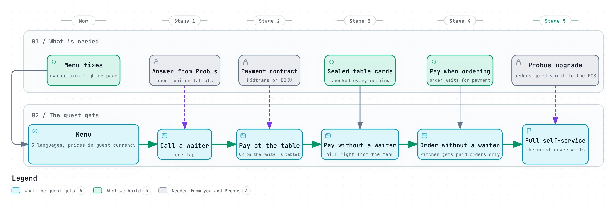

Five stages
Now: Menu ready
Five languages, prices in the guest's currency. Working now.
Stage 1: Call a waiter
The guest calls a waiter or asks for the bill with one tap. The signal goes to the waiter's tablet. No money is involved at this stage.
Stage 2: Pay at the table
The waiter shows a QR code on the tablet, and the guest pays with their own phone by QRIS or card. The bill can be split.
Stage 3: Pay without a waiter
The guest pays the bill right from the menu without waiting for a waiter.
Stage 4: Order without a waiter
The guest orders from the menu. An order goes to the kitchen only after it is paid.
Stage 5: Full self-service goal
Orders go straight into the restaurant's POS and on to the kitchen, and payment closes the bill by itself. This needs Probus to upgrade the restaurant's system.
Stages 1 and 2 move on after two weeks without problems, stage 3 after a month, and stage 5 starts once Probus has connected the POS. Any stage can be switched off with one button, and the restaurant goes back to how it worked before.
How the money stays under control
- A payment counts only after the bank confirms it: the table turns green on the waiter's tablet. Screenshots and the guest's word do not count.
- Every evening payments are matched with the PRESTO POS.
- Card details never reach us: the guest pays on the payment provider's page.
- Everything is tested in test mode first, then launched at one location with a limit per payment.
- An unpaid order from the menu never goes to the kitchen.
What we need from you
- Ask Probus which POS the restaurant runs and whether our menu can connect to it. The list of questions is in the full plan.
- Sign a contract with the payment provider Midtrans or DOKU in the restaurant company's name.
- Ask your accountant how payments from the app should be recorded.
- Decide whether waiter tablets are enough or their phones are needed too, which payment limits to set for the first weeks, and which payment options guests get at the end.
The plan as a diagram

Full plan
The Probus POS, payments, calling a waiter, risks and protection, checks before launch.